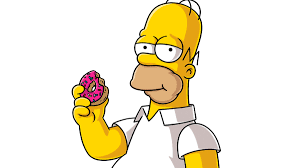

La pregunta que ha mantenido en vilo a internet durante la última década no es "¿por qué Los Simpson siguen al aire?", sino "¿cómo es que saben lo que va a pasar?". Lo que comenzó como un conjunto de coincidencias aisladas se ha transformado en un pilar de la cultura digital: La Predicción Simpson. Para entender este fenómeno, debemos alejarnos de la mística y acercarnos a la sociología. Los Simpson no son una bola de cristal; son un espejo cóncavo de la sociedad occidental. Al llevar las tendencias actuales a su extremo satírico más absurdo, los guionistas terminan trazando el camino lógico que la realidad, en su propia excentricidad, termina recorriendo años después. En esta web, desglosamos las cláusulas de esta "profecía animada" dividida por ejes temáticos.
¡Explora todo esto y mas aqui!
